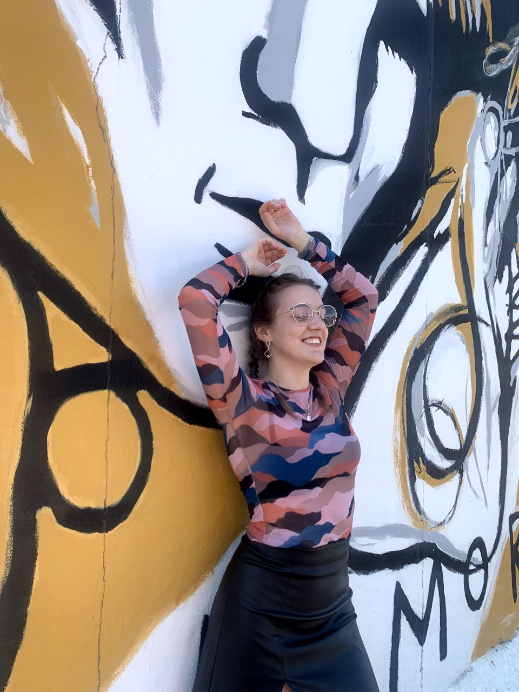
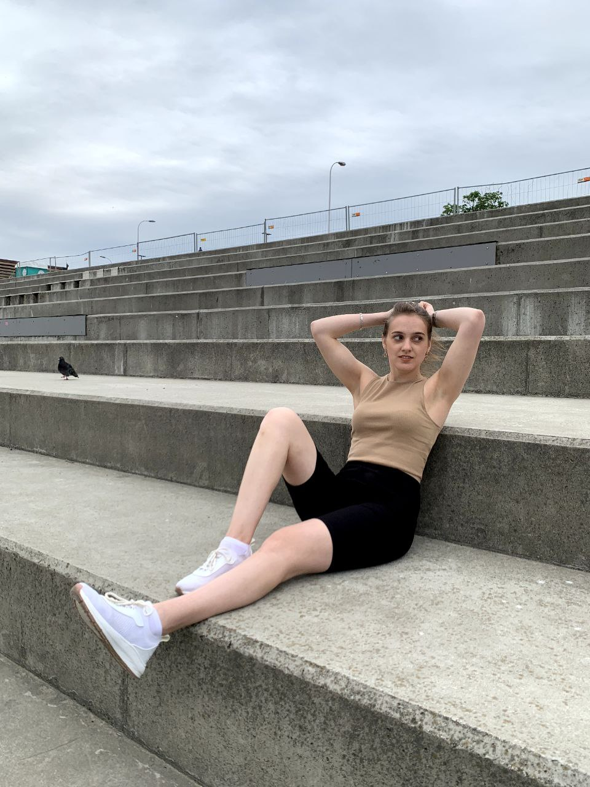
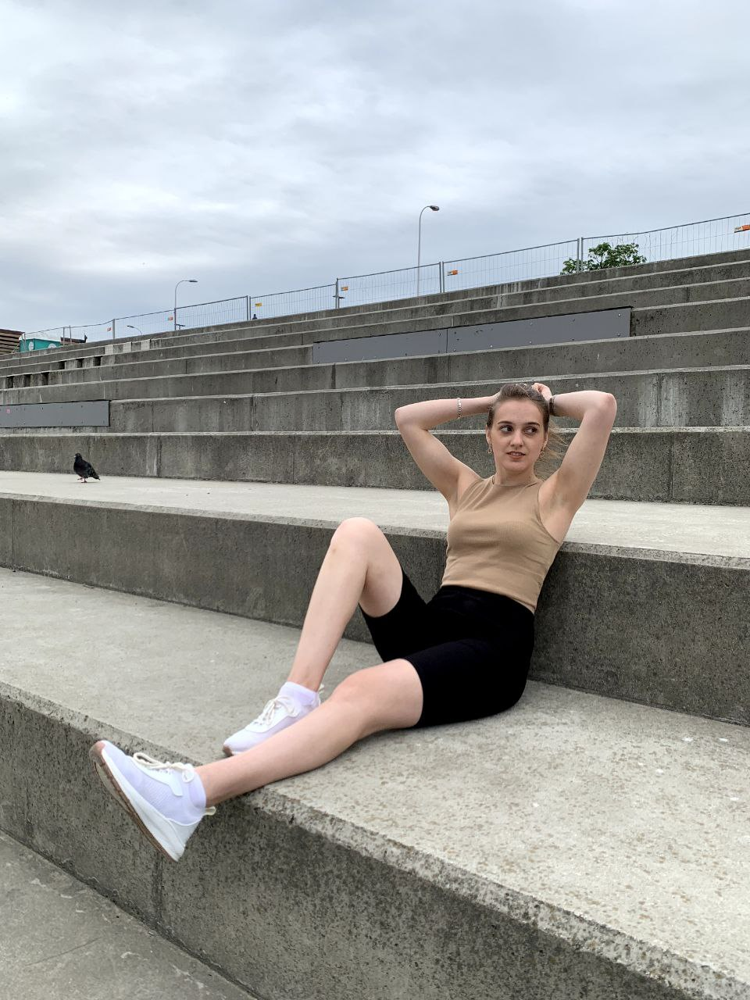
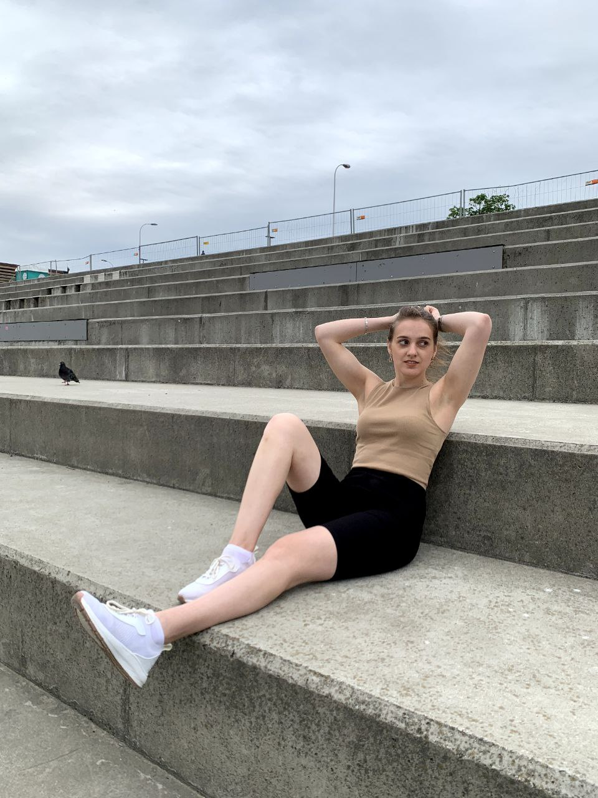
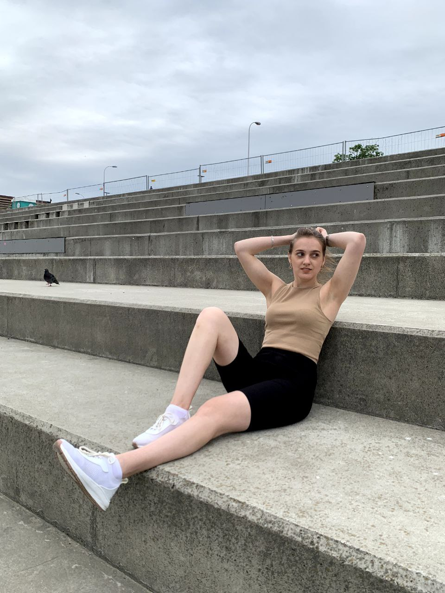
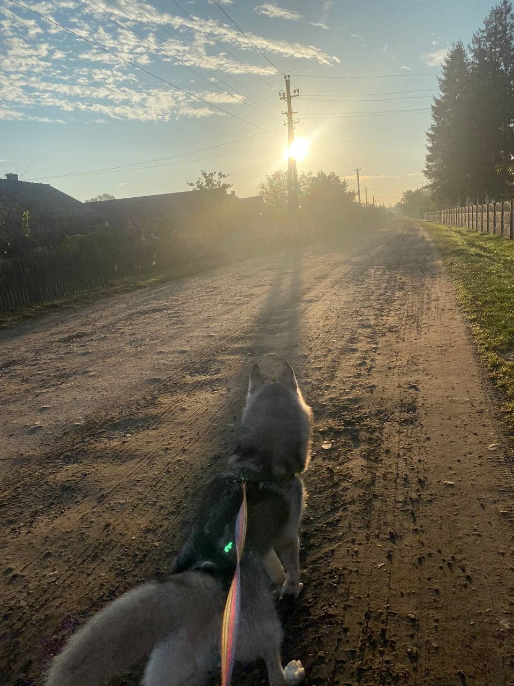
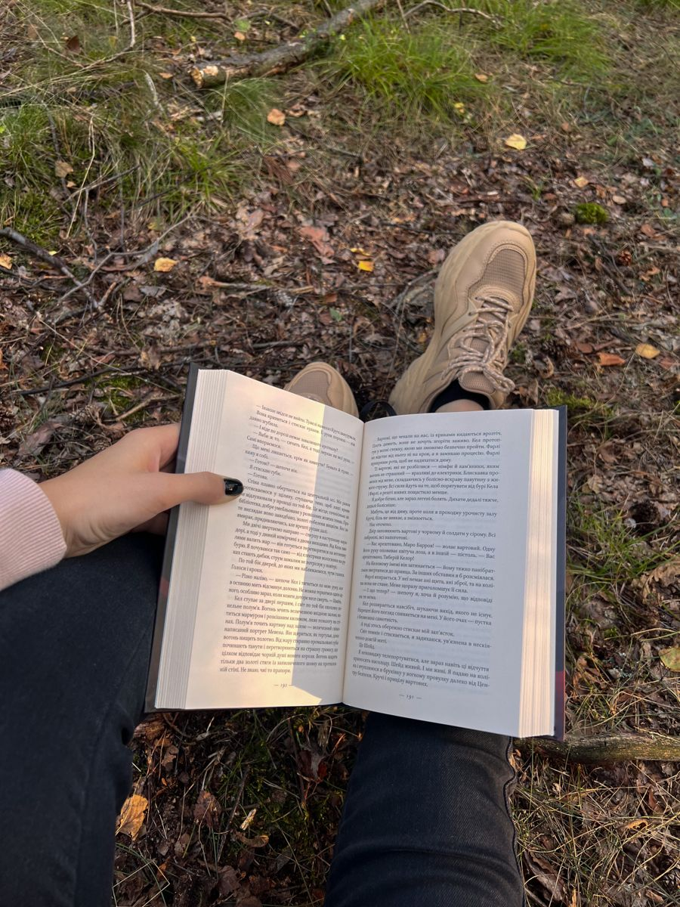
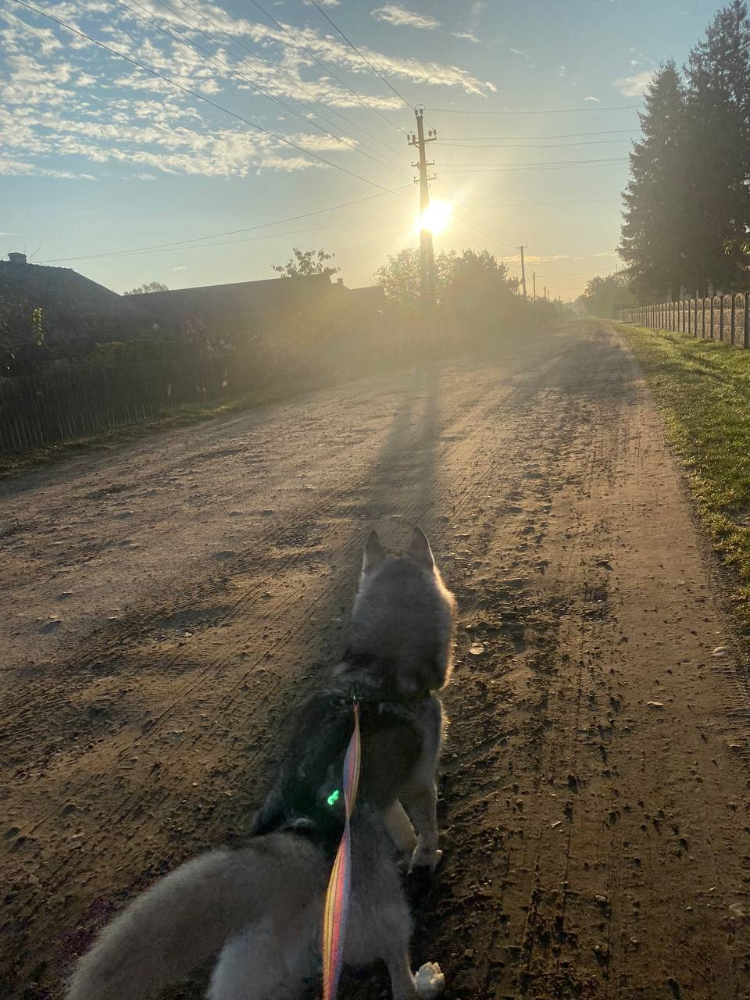
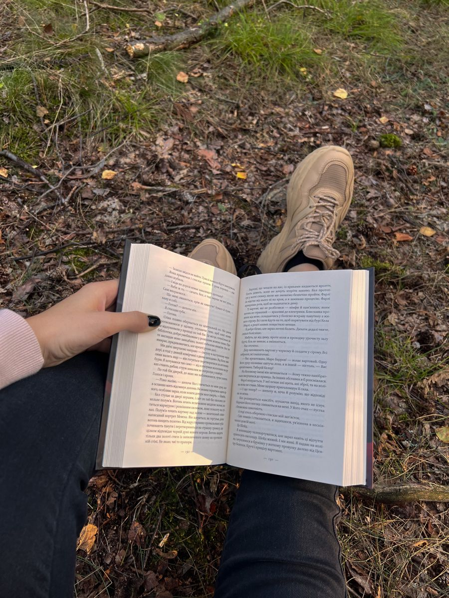

Привіт!
Це я)
Ярина
Це я)
Ярина

 



Мене звати Свідрак Ярина. Мені 19 років. Навчаюся у Львівській національній академії мистецтв на кафедрі Графічний
дизайн.
В дитинстві ходила в музичну школу і мала вже йти вчитися в цьому напрямку.
Як мене
занесло в ГД? Я й сама не знаю. Раптом посеред ночі Іскра, Буря, Емоції.
Я все кидаю
і вступаю на графічний дизайн, знаєте, ще жодного разу не пошкодувала про це. Велике здивування для всіх, але таке життя)
 


